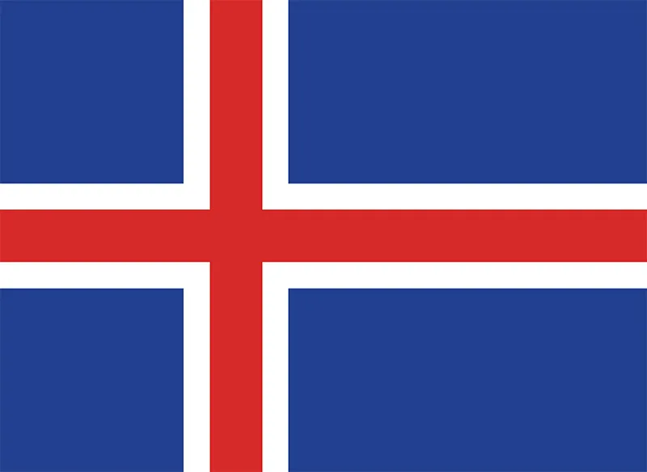
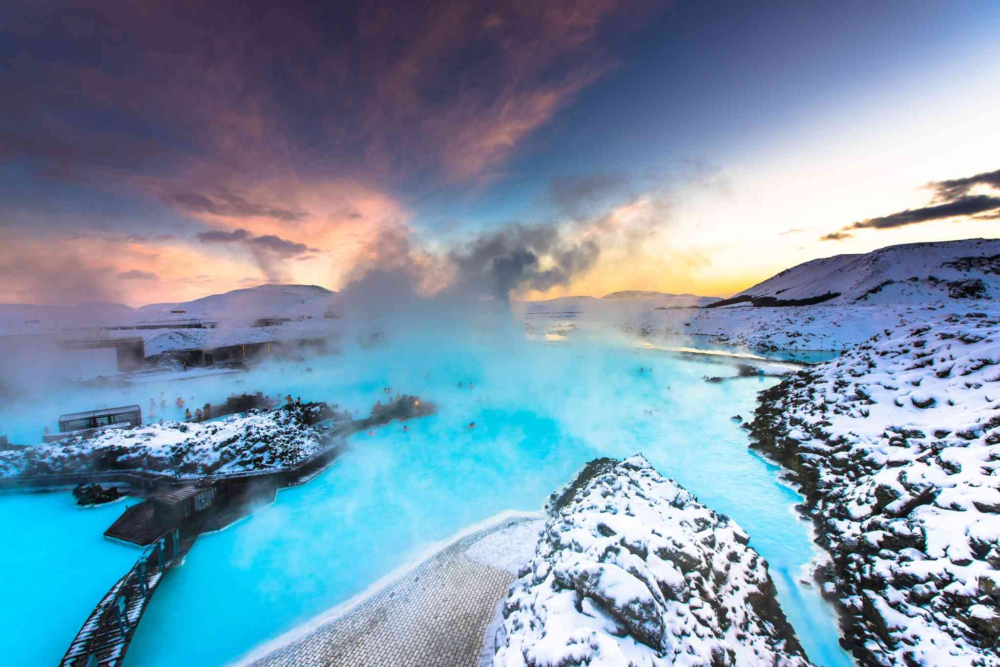
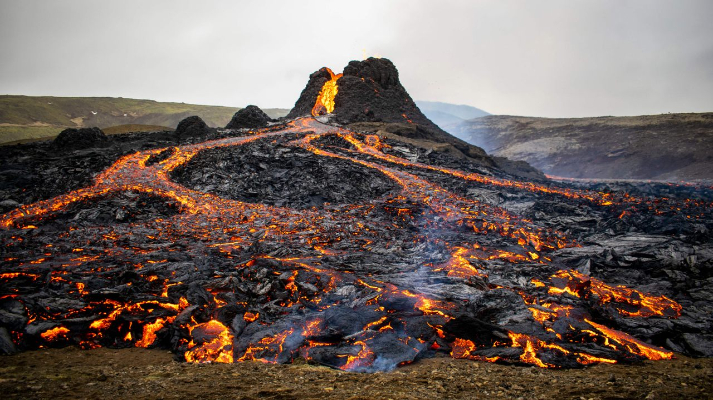
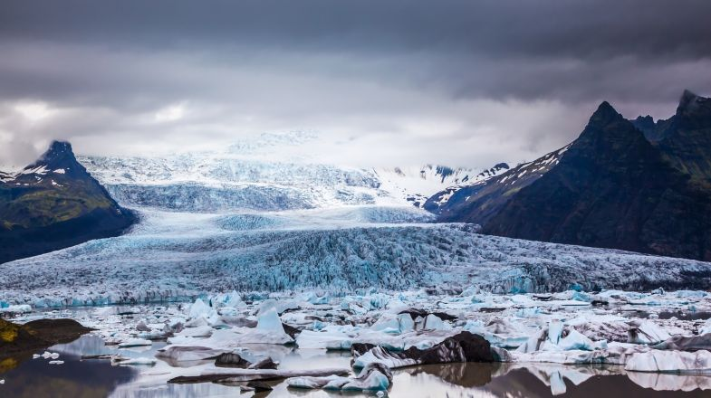
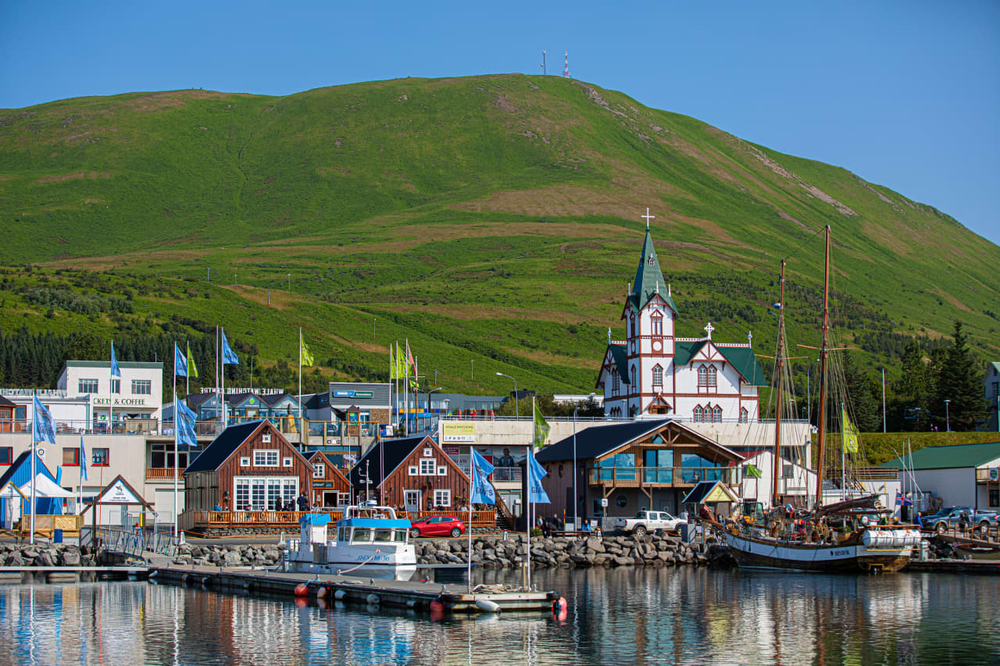
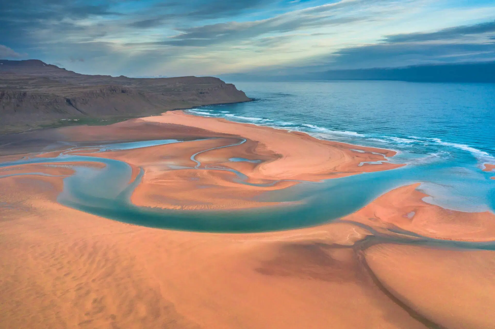
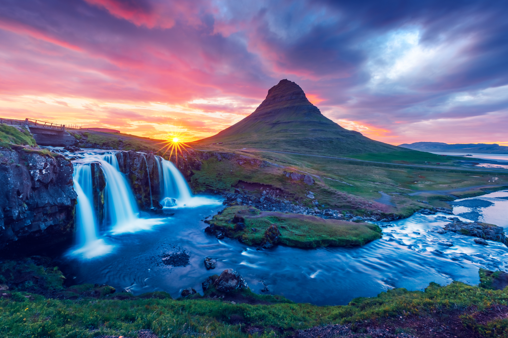

Islanda este o țară insulară nordică aflată între Atlanticul de Nord și Oceanul Arctic. Este țara cu cea mai rarefiată populație din Europa, iar zonele înconjurătoare din sud-vestul capitalei Reykjavík dețin două treimi din populație. Insula conține vulcani activi și izvoare geotermale. Interiorul ei constă în principal dintr-un platou caracterizat de câmpii nisipoase și de lavă, munți și ghețari, din care mai multe râuri glaciare curg către mare prin câmpia litorală. Islanda este încălzită de Curentul Golfului și are o climă temperată, în ciuda latitudinii mari la care se află, în apropierea cercului polar de nord.
Cultura islandeză este bazată pe moștenirea scandinavă. Majoritatea islandezilor sunt urmașii coloniștilor germanici și celtici. Limba islandeză, o limbă germanică de nord, a evoluat din nordica veche și este strâns înrudită cu feroeza și cu dialectele norvegiene vestice. Moștenirea culturală a țării cuprinde bucătăria tradițională, literatura și saga medievale. Islanda are cea mai mică populație dintre toate țările membre NATO și este singura care nu are o armată, apărarea țării fiind în sarcina unei paze de coastă cu armament restrâns.
DATE GENERALE

Denumirea oficiala: Islanda
Fusul orar: UTC+0
Capitala: Reykjavík
Suprafata: 103.004 km2
Moneda: coroana islandeza
Limba oficiala: islandeză
Prefix telefonic international: +354
ATRACTII TURISTICE

Una dintre cele mai mari atractii ale Islandei, Laguna Albastra este “nascuta” pe baza unei formatiuni de lava, apa fiind mentinuta constant la o temperatura cuprinsa intre 37 – 39 grade Celsius. In imediata apropiere, un izvor termal care isi are inceputurile la mare adancime trimite apa la suprafata, aceasta fiind folosita in primul rand la turbinele care genereaza curent electric. Dupa ce trec prin turbine, aburii si apa fierbinte sunt preluate si se transfera in sistemul de incalzire al orasului.
În timp ce Islanda este o țară plină de izvoare termale naturale, Laguna Albastră nu este unul dintre ele. Terenul este natural, la fel și lava care modelează piscina, dar apa caldă este de fapt rezultatul scurgerii de la centrala geotermală de alături.
Asta nu înseamnă că este periculos sau toxic - departe de asta! Este încă o piscină geotermală cu apă bogată în minerale.

Fagradalsfjall s-a format în ultima perioadă glaciară pe peninsula Reykjanes, la aproximativ 40 de kilometri (25 mile) de Reykjavík, Islanda. Nicio erupție vulcanică nu a avut loc timp de 815 ani în Peninsula Reykjanes până la 19 martie 2021, când a apărut o fisură în Geldingadalir, la sud de muntele Fagradalsfjall. Erupția din 2021 a fost efuzivă și a continuat să emită lavă proaspătă sporadic până la 18 septembrie 2021.
Erupția a fost unică printre vulcanii monitorizați în Islanda până acum și s-a sugerat că s-ar putea dezvolta într-un vulcan scut. Datorită ușurinței sale relative de acces din Reykjavík, vulcanul a devenit o atracție pentru localnicii și turiștii străini. O altă erupție, foarte asemănătoare cu erupția din 2021, a început pe 3 august 2022. Este încă considerată în curs de desfășurare, deși nu a existat nicio activitate vizibilă din 21 august 2022.

Ghețarul Vatnajökull este cel mai mare din Europa și acoperă 8% din suprafața Islandei. Vatnajökull are aproximativ 7.900 de kilometri pătrați și poate fi văzut din spațiu. Grosimea medie a gheții este de 380 de metri.
Conformaţia gheţarului Vatnajökull este de calotă, datorita zăpezii care cade iarna şi care, datorită soarelui de vară, se topeşte mai întâi la suprafaţă şi mai pe urmă spre interior, infiltrându-se în interior şi îngheţând din nou.
Partea de nord-vest a gheţarului este aşezată pe un vulcan activ, Grimsvotn, care în 1996, in urma unui cutremur violent a creat un crater lung de peste 100 de metri, care poate fi văzut în totalitate în interiorul gheţarului. În crater s-a format un munte nou, al cărui vârf se afla la 200 de metri dedesubtul suprafeţei originare a gheţarului, cam ca o mică insulă înconjurată de apă fierbinte.

Husavik

Plaja Rauðisandur

Peninsula Snaefellsnes
TRAVEL TIPS
Imbracamintea trebuie sa fie nu doar calduroasa, ci si impermeabila!
Nu uita ochelarii de soare cu protectie UV!
Ai nevoie de mașină!
Atunci cand vizitezi o familie islandeza este de recomandat sa te descalti.
 ISLANDA
ISLANDA